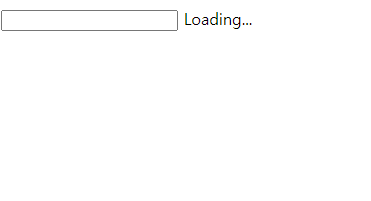

(현업에서 서비스를 만들때 화장품을 검색하거나 영상을 검색할때 등에 사용할 검색 자동완성 기능을 요구하는 경우가 많이 있습니다. 사용자는 이 기능으로 내가 검색한 내용과 관련된 다른 검색어들을 알 수 있게 되어 사용자에게 정보 편의성이 주어지고 서비스 입장에서는 사용자로부터 더 많은 검색을 이끌어낼 수 있습니다.)
Q. 아래와 같은 스펙을 가진 검색 자동완성 기능을 만들어보세요.

q1. Javascript
q2. RxJS를 이용해 스트림 구조로 동일한 기능을 작성하시오
q1
./question/1. Vanilla JavaScript/src/app.js
q2
./question/2. RxJS/src/app.js
q1
경로
./question/1. Vanilla JavaScript
터미널
$ npm install
$ npm start
q2
경로
./question/2. RxJS
터미널
$ npm install
$ npm start
./solution/2.other 풀이 실행 시q1
경로
./solution/2.other/1. Vanilla JavaScript
index.html 열기
q2
경로
./solution/2.other/2. RxJS
터미널
$ npm install
$ npm run dev